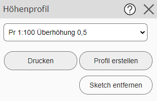
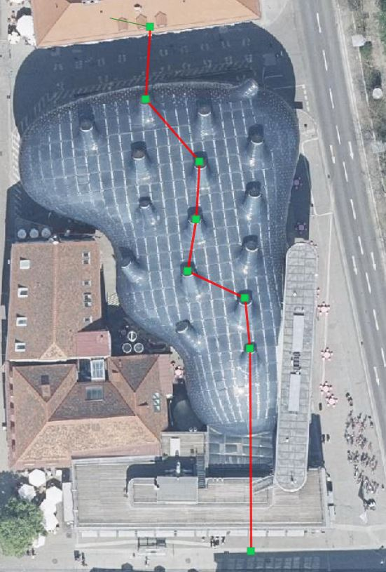
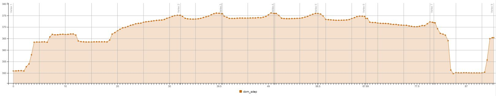
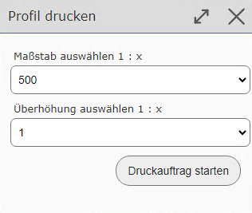
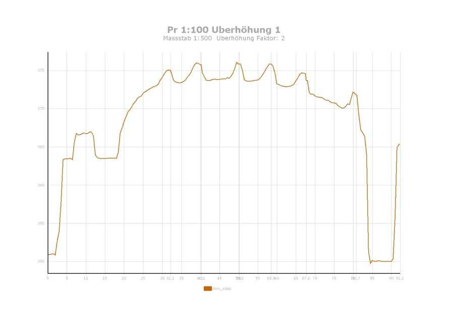

Elevation Profile
With this tool, an elevation profile can be created along a drawn (poly)line. In the tool dialog, you must specify the case (scale/vertical exaggeration) for which the profile should be created.

Note
The scale generally determines how many intermediate points are queried. For example, if you select a very large scale for a very long line, creating the profile can take a very long time, because a very large number of intermediate points are then queried. In the worst case, the query is not possible at all.
A line with several intermediate points can now be created on the map.

If you then click Create Profile in the tool dialog, the elevation profile is shown after a short calculation time:

Note
If the profile is too “imprecise” (has too few intermediate points), the profile type can be changed and the profile recreated.
Note
The elevation profile shown in the viewer is interactive. If you move the mouse over one of the elevation points, the elevation is shown as a tooltip. At the same time, a marker is shown at the corresponding point on the map, on the drawn profile line.
The profile can also be output as a PDF via the Print button in the tool dialog. A dialog then appears once more, in which the target scale and the exact vertical exaggeration of the profile can be specified:

Once the PDF file has been created successfully, a preview appears in the print jobs dialog, and the elevation profile can be downloaded:
